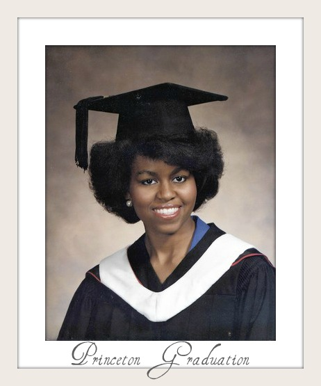
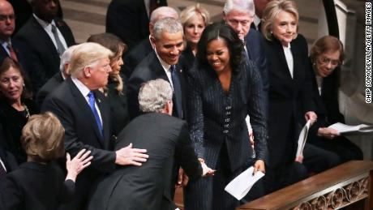
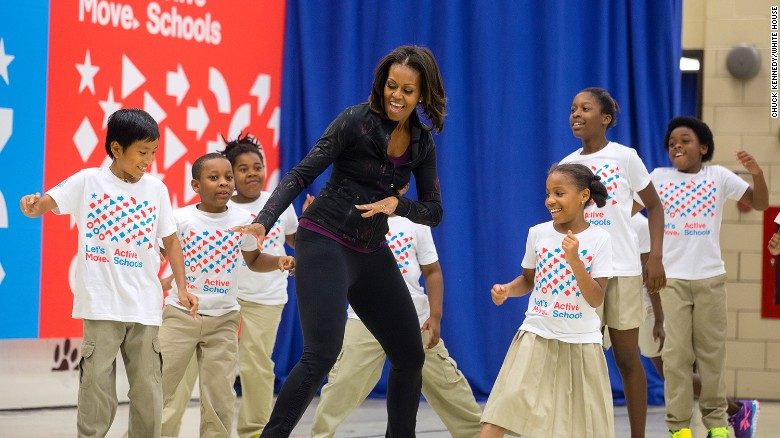
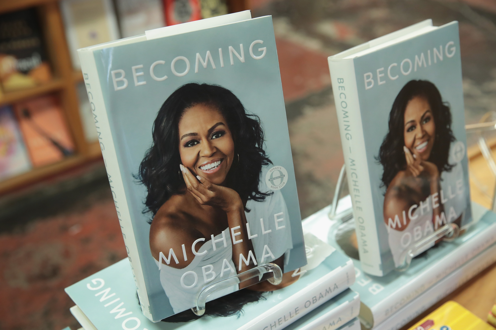

WHY IS SHE SO OUTSTANDING?
I know I couldn't exhaust the number of ways in which Michelle Obama
is one of the most influential women of the 21st Century but I could try
all I can do is try
Michelle Obama's achievements
Being married to a man that was once the most powerful man alive,
President Barack Hussein Obama, you'd think that being that
being the FLOTUS to his POTUS as she fondly puts it or the Renegade to
his Reneissance-their secret service code names-would be her greatest achievement. However,
even as President Barrack Obama insists, Michelle Obama was once Michelle Lavaughn Robinson,
an exceptionally bright girl from the South Side even before becoming Mrs.President
- She is a graduate of Princeton University and Harvard Law School. In her early legal career,
she worked at the law firm Sidley Austin, where she met Barack Obama.

- She subsequently worked in non-profits and as the Associate Dean of Student Services at the University of Chicago and the Vice President for
Community and External Affairs of the University of Chicago Medical Center.
- In 2010 she passed The School Lunch program with bipartisan support.
The program provides free and reduced-price meals to more than
21 million low-income children, now requires districts to serve more fruit,
vegetables, whole grains, lean protein and low-fat dairy products.

- Also in 2010 she launched Let's Move! Michelle Obama said that her goal was to make this effort her legacy:
"I want to leave something behind that we can say,
'Because of this time that this person spent here, this thing has changed.'
And my hope is that that's going to be in the area of childhood obesity.

- And last but not least, how she won my heart with her book Becoming.
Michelle Obama is definitely a gifted writer
